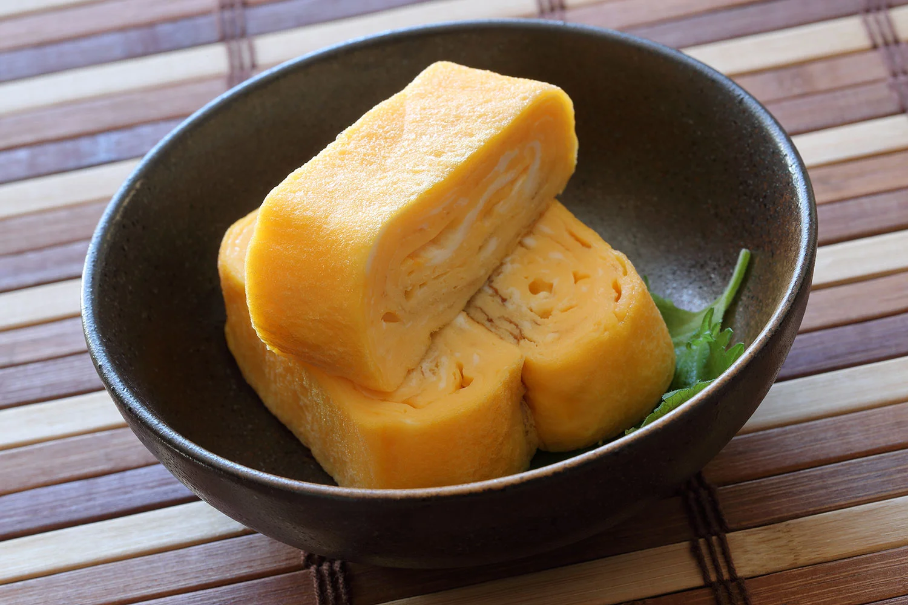

Tamago

Description:
Tamago is a Japanese rolled omelette made by layering and cooking beaten eggs with soy sauce,
mirin, and a pinch of salt. It's sweet, savory, and often served as a side dish, in sushi, or as part of a bento
box. Its soft, fluffy texture makes it a delicious and popular comfort food.
Ingredients:
- 3 eggs
- 1 tbsp soy sauce
- 1 tbsp mirin (or a little sugar if you don’t have mirin)
- 1/2 tsp salt
- 1 tsp vegetable oil
Steps:
- repare the egg mixture:
In a bowl, whisk together the eggs, soy sauce, mirin (or sugar), and salt until well combined.
- eat the pan:
Heat a non-stick frying pan over medium heat and lightly oil it with a small amount of vegetable oil.
- Cook the tamago:
Pour a small amount of the egg mixture into the pan, tilting the pan to spread it evenly. Once the egg
begins to set but is still slightly runny on top, use a spatula to gently roll the egg from one side to
the other.
Push the rolled egg to one side of the pan, and then pour more egg mixture into the pan. Lift the rolled
egg to let the new egg mixture flow underneath. Repeat this process until all the egg mixture is used
up.
- Shape the tamago:
Once the omelette is cooked, use a spatula to gently shape it into a log or rectangular shape. You can
also roll it up more tightly.
- Serve:
Slice the tamago into bite-sized pieces and serve!
Tamago is typically served with rice, sushi, or as a side dish in a Japanese meal. It’s light, sweet, and
savory!
Home